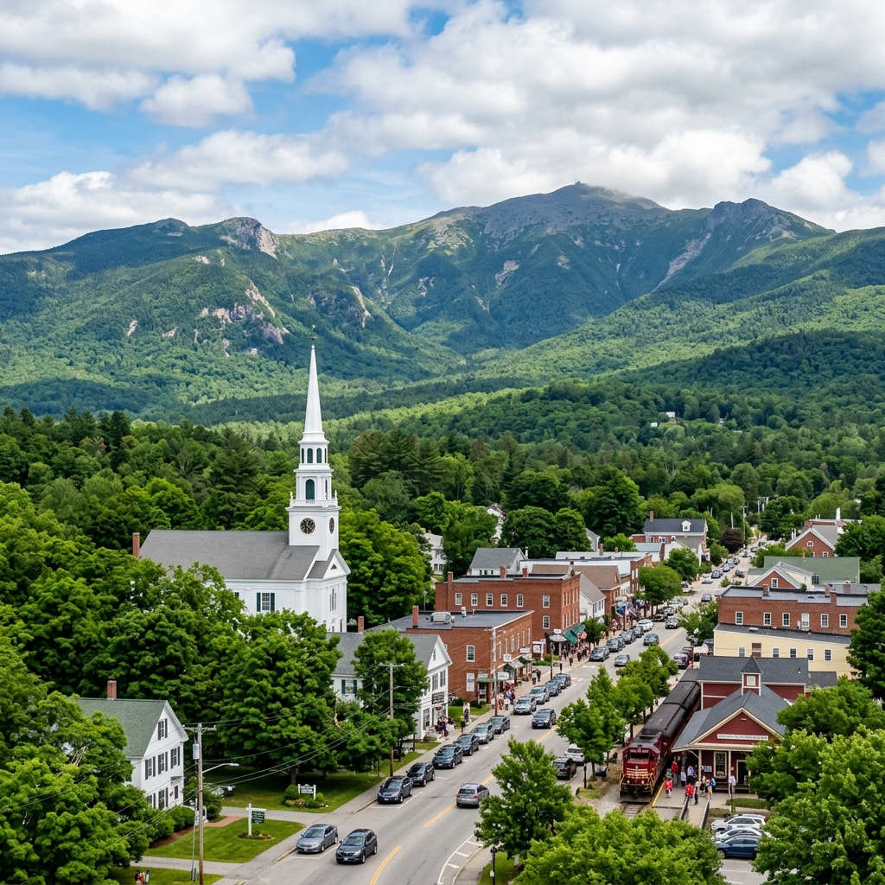
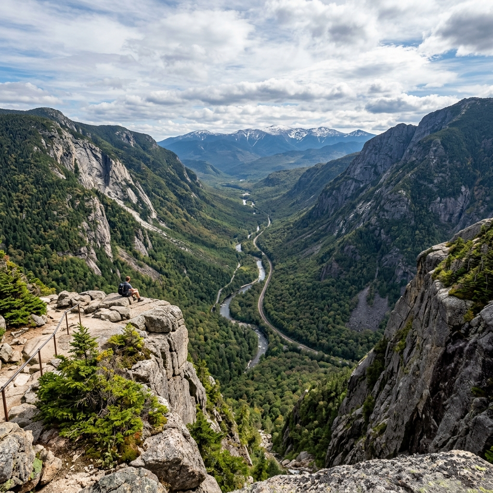
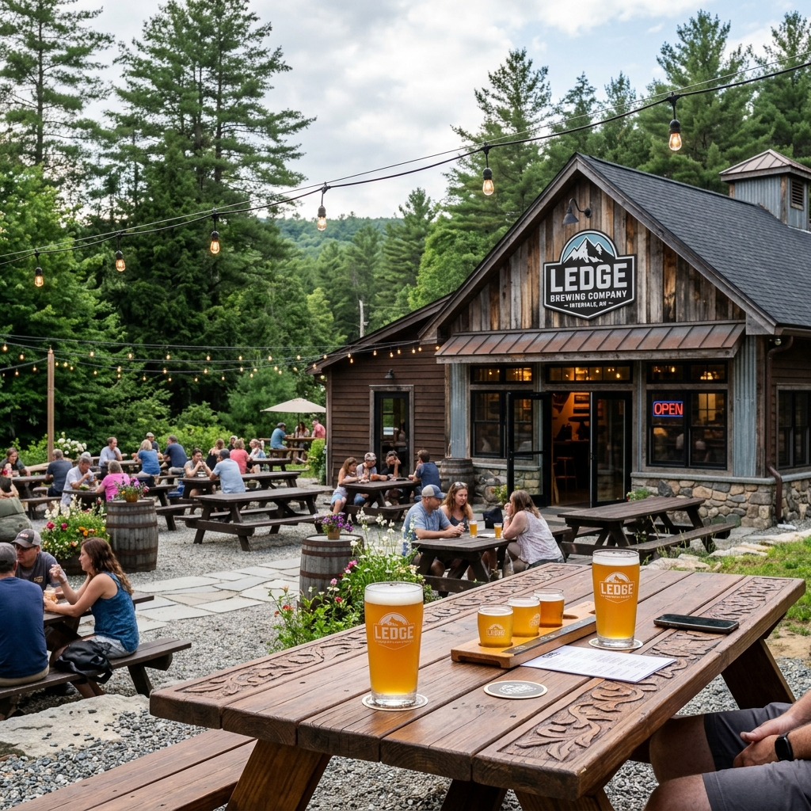
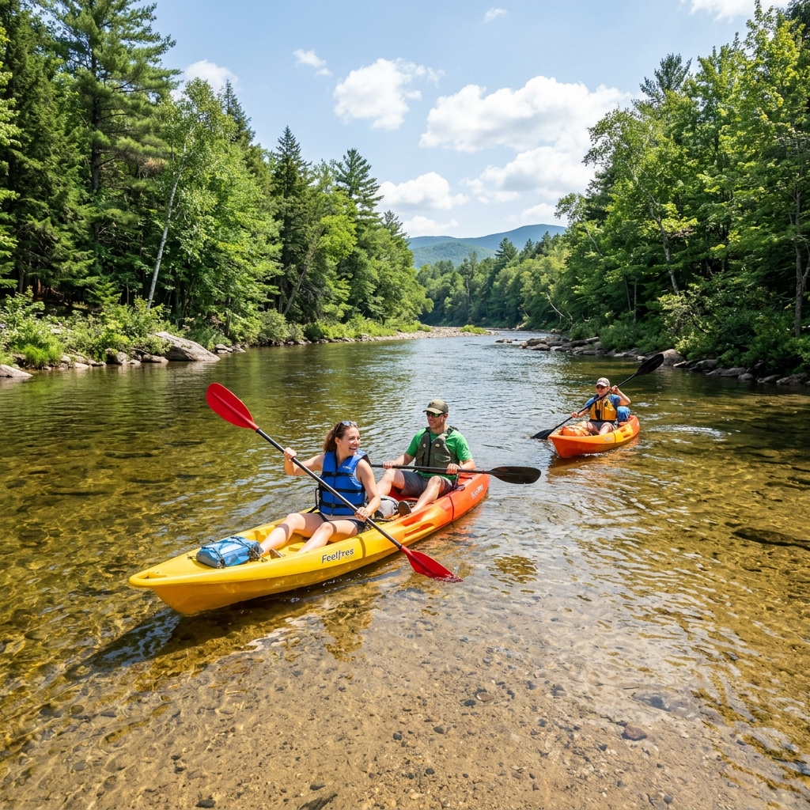
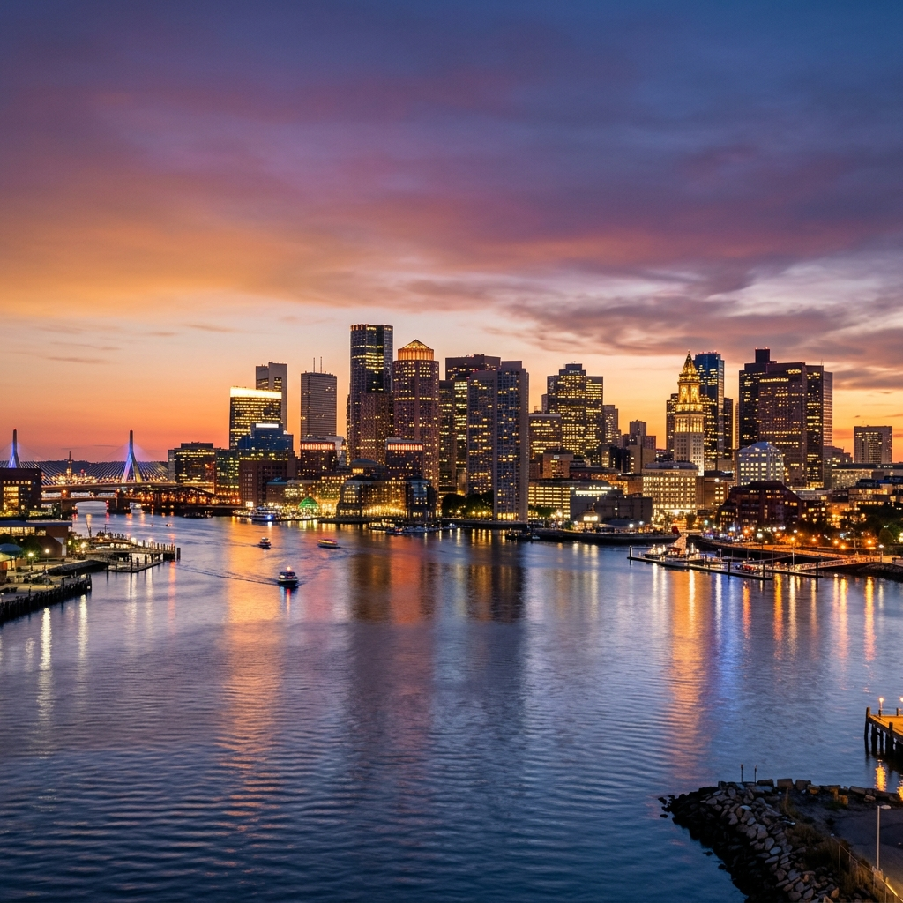

Day 1: Arrival & High-Impact Hiking

Drive: Boston to Crawford Notch, NH
⏱️ Estimated Duration: 2.5–3 hours
Load up the car and depart Boston early via I-93 N, transitioning from the urban sprawl into the scenic mountain highway winding through Franconia Notch. The route takes you directly into the heart of the White Mountains, offering incredible views of steep granite peaks right from the road.
Open Route in Google Maps

Mount Willard (Crawford Notch)
⏱️ Estimated Duration: 2–3 hours
A mid-difficulty 3.2-mile out-and-back trail starting from the historic Crawford Depot. The trail ascends steadily through scenic northern hardwood forests before reaching the steep, rocky ledges at the summit. Scaling roughly 900 vertical feet, it delivers an abrupt, breathtaking cliff face overview looking straight down the center of the massive, U-shaped glaciated pass of Crawford Notch. For those seeking an even higher-intensity challenge, the Franconia Ridge Loop (9-mile strenuous alpine trek) serves as an alternative.
Open in Google Maps

Ledge Brewing Company (Intervale, NH)
⏱️ Estimated Duration: 2–3 hours
An expansive, welcoming taproom and outdoor beer garden in Intervale, NH, engineered specifically for hikers and outdoor enthusiasts. Sample flights of fresh, house-brewed New England IPAs, stouts, and crisp lagers while relaxing by the outdoor fire pits. The venue regularly features on-site scratch kitchens, local food trucks, and live music, making it the perfect location to swap trail stories and recover from the day's physical exertion. Alternatively, Moat Mountain Smoke House in North Conway offers craft beers and slow-smoked BBQ.
Open in Google Maps
Day 2: Mount Washington or Saco River Lines
Alternative A: Alpine Summit

Mount Washington Summit Road
⏱️ Estimated Duration: 2–3 hours
Drive the steep, winding, and technical 7.6-mile Mount Washington Auto Road to reach the 6,288-foot summit, the highest peak in the Northeast. Expect a thrilling, high-focus drive through three distinct climate zones, culminating in extreme alpine weather conditions and panoramic vistas stretching across five states and into Canada. Explore the historic Tip-Top House and the Sherman Adams Visitor Center at the peak.
Open in Google Maps
Alternative B: River Lines

Saco River Open-Top Kayaking
⏱️ Estimated Duration: 3–4 hours
Enjoy a scenic, active-recovery kayaking run down the Saco River in Conway, NH. This open-top kayaking activity features a gentle current, sandy beaches for swimming and resting, and beautiful mountain valley scenery. Rent a kayak locally and drift along clean, cold waters under a pine canopy.
Open in Google Maps

Drive: White Mountains, NH back to Boston, MA
⏱️ Estimated Duration: 2.5–3 hours
Pack up and head south back to Boston via I-93 S. Reflect on the weekend's challenges as you leave the White Mountain National Forest behind, driving from scenic mountain passes back into the historic Boston cityscape.
Open Route in Google Maps